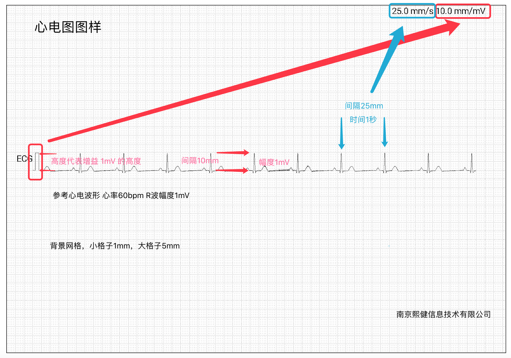
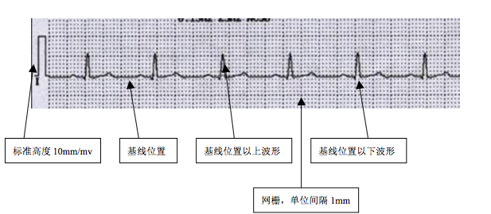
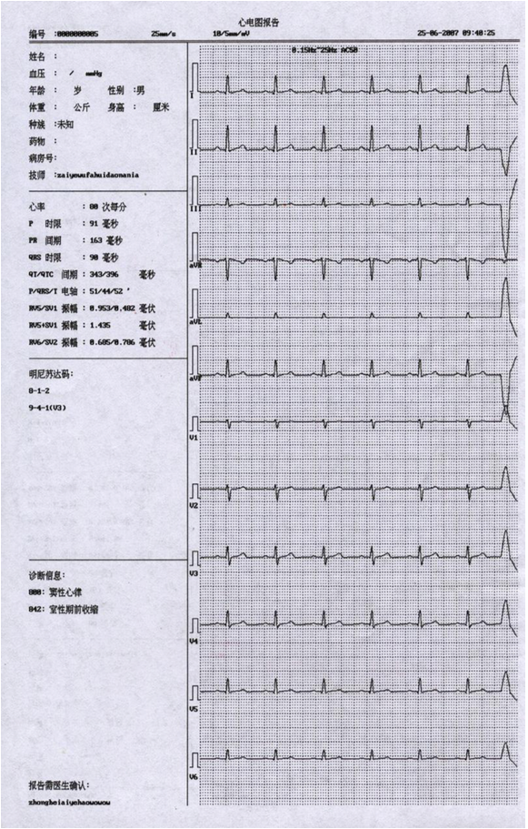

集成指南
SDK说明
- 介绍
本 Android SDK 方便开发者基于 SnapEcgSDK 来快捷地为 Android App 增加测量心电图功能。
- 用户须知
SDK开发调试需要有专供的设备和配套开发者注册信息。熙健专供型号心电图采集设备有B09、U09、H07、H10。
- 兼容性
要求Android系统版本4.0以上，支持usb host、otg供电；若要使用蓝牙模式，则要求Android系统版本4.3以上。
- 示例源码下载
EcgSdkDemo 是SDK配套的Android源码演示项目，用于演示项目的创建、数据与显示的交互。
功能集成
开发者账号申请
开发者账号申请请联系熙健商务。
集成步骤
- 复制 libs/mhealth365-osdk-v*.*.jar 到工程 libs/ 目录下。
- 复制 libs/(cpu-type)/libmhealth365.so 到你的工程中存放对应cpu类型的目录下。
- 复制 libs/(cpu-type)/libTestCallEcg.so 到你的工程中存放对应cpu类型的目录下。
so库说明： 使用Android Studio的开发者，如果使用jniLibs文件夹导入so文件，则仅需将所有cpu类型的文件夹拷进去；如果将so文件添加在module的libs文件夹下，注意在module的gradle配置中添加一下配置：
android {
......
sourceSets {
main {
jniLibs.srcDirs = ['libs']
......
}
......
}
......
}
AndroidManifest.xml配置
- 使用权限
<uses-permission android:name="android.permission.WRITE_EXTERNAL_STORAGE"/>
<uses-permission android:name="android.permission.READ_EXTERNAL_STORAGE"/>
<uses-permission android:name="android.permission.ACCESS_NETWORK_STATE"/>
<uses-permission android:name="android.permission.ACCESS_WIFI_STATE"/>
<uses-permission android:name="android.permission.MOUNT_UNMOUT_FILESYSTEMS"/>
<uses-permission android:name="android.permission.INTERNET"/>
<uses-permission android:name="android.permission.READ_PHONE_STATE"/>
<uses-permission android:name="android.permission.READ_LOGS"/>
<uses-permission android:name="android.permission.BLUETOOTH"/>
<uses-permission android:name="android.permission.BLUETOOTH_ADMIN"/>
<uses-permission android:name="android.permission.ACCESS_COARSE_LOCATION"/>
注意：编译版本在Android6.0以上时，需要使用动态权限申请。
- USB设备
对于使用USB设备测量的开发者，为了能收到USB设备挂载通知，需添加USB特性
<uses-feature android:name="android.hardware.usb.host"/>
以及USB设备Intent Filter（可放在需要唤起的Activity中）
<intent-filter>
<action android:name="android.hardware.usb.action.USB_DEVICE_ATTACHED"/>
</intent-filter>
<meta-data android:name="android.hardware.usb.action.USB_DEVICE_ATTACHED" android:resource="@xml/device_filter"/>
其中，xml文件device_filter是为了过滤特定的USB设备通知，具体的特定属性请参照Demo示例代码。
初始化SDK
在Application的onCreate方法中进行SDK初始化，详细参数说明请查阅开发文档及Demo示例代码。
try {
EcgOpenApiHelper.getInstance().initOsdk(mAppContext, thirdPartyId, appId, appSecret, userOrgName, mOsdkCallback, pkgName);
} catch (Exception e) {
e.printStackTrace();
}
其中的appId、thirdPartyId是申请开发者账号时所分配，userOrgName、pkgName为申请开发者账号时填写的用户机构名称、包名，mOsdkCallback为设备连接回调函数：
OsdkCallback displayMessage;
public void setOsdkCallback(OsdkCallback osdkCallback) {
displayMessage = osdkCallback;
}
OsdkCallback mOsdkCallback = new OsdkCallback() {
@Override
public void deviceSocketLost() {
if (displayMessage != null)
displayMessage.deviceSocketLost();
}
@Override
public void deviceSocketConnect() {
if (displayMessage != null)
displayMessage.deviceSocketConnect();
}
@Override
public void devicePlugOut() {
if (displayMessage != null)
displayMessage.devicePlugOut();
}
@Override
public void devicePlugIn() {
if (displayMessage != null)
displayMessage.devicePlugIn();
}
@Override
public void deviceReady(int sample) {
if (displayMessage != null)
displayMessage.deviceReady(sample);
}
@Override
public void deviceNotReady(int msg) {
if (displayMessage != null)
displayMessage.deviceNotReady(msg);
}
};
在测量界面(Activity)中实例化EcgOpenApiHelper，并设置设备连接回调：
EcgOpenApiHelper mOsdkHelper = EcgOpenApiHelper.getInstance();
mOsdkHelper.setDeviceType(DEVICE.CONNECT_TYPE_BLUETOOTH_DUAL);//设置所用设备类型：蓝牙或USB
mOsdkHelper.setCountdownTime(delayTime);//这里是设置了点击开始记录后的延迟出图时间，用于测量人调整测量时的姿势，如果不需要延迟可不设置
//连接设备时的回调
App.getApp().setOsdkCallback(new OsdkCallback() {
@Override
public void devicePlugIn() {
}
@Override
public void devicePlugOut() {
}
@Override
public void deviceSocketConnect() {
}
@Override
public void deviceSocketLost() {
}
@Override
public void deviceReady(int sample) {
}
@Override
public void deviceNotReady(int msg) {
}
});
在测量界面(Activity)中初始化实时心电图显示控件RealTimeEcgBrowser：
RealTimeEcgBrowser mEcgBrowser = (RealTimeEcgBrowser) findViewById(R.id.ecgBrowser);
mEcgBrowser.setEcgBrowserInteractive(new EcgBrowserInteractive() {
@Override
public void onChangeGainAndSpeed(int gain, int speed) {//增益走速调节
}
});
mEcgBrowser.setSpeedAndGain(Scale.SPEED_25MM_S, Scale.GAIN_10MM_MV);// 设置增益和走速
mEcgBrowser.setSample(200);//采样率：蓝牙设备为200，USB设备为500
mEcgBrowser.showFps(false);
mEcgBrowser.setScreenDPI(mEcgBrowser.getDisplayDPI());
mEcgBrowser.clearEcg();
基础功能集成
- 注册（详细参数说明请查阅开发文档及Demo示例代码）
mOsdkHelper.registerUser(user, mRegisterCallback);
- 登录（详细参数说明请查阅开发文档及Demo示例代码）
mOsdkHelper.login(openId, mLoginCallback);
- 搜索蓝牙设备（下面为简单代码，详细使用方式可参考Demo示例代码）
mOsdkHelper.createBluetoothDiscovery(this);
mOsdkHelper.enableBluetooth();
mOsdkHelper.startDiscovery();
- 连接蓝牙设备（详细参数说明请查阅开发文档及Demo示例代码）
mOsdkHelper.connectBluetooth(macAddress, BluetoothDevice.DEVICE_TYPE_CLASSIC);
- 记录数据（详细参数说明请查阅开发文档及Demo示例代码）
mOsdkHelper.startRecord(mode, new RecordCallback() {
@Override
public void recordTime(int second) {//记录时长
}
@Override
public void recordStatistics(String id, int averageHeartRate, int[] heartRectPercentages, int[] rhythmRectPercentages, int rhythmType) {//记录结束后的统计分析
}
@Override
public void recordStart(String id) {//记录开始
}
@Override
public void recordEnd(String id) {//记录结束
}
@Override
public void heartRate(int hr) {//当前心率
}
@Override
public void ecg(int[] value) {//返回实时记录数据
}
@Override
public void RR(int ms) {//RR间期
}
@Override
public void startFailed(RECORD_FAIL_MSG msg) {//开始记录失败
}
@Override
public void battery(int value) {//设备电量，分为0、1、2、3四个等级
}
@Override
public void addAccelerate(short x, short y, short z) {//三轴加速度
}
@Override
public void addAccelerateVector(float arg0) {
}
@Override
public void leadOff(boolean isOff) {//导联脱落
}
});
- 结束记录
try {
mOsdkHelper.stopRecord();
} catch (IOException e) {
e.printStackTrace();
}
高级功能集成
- 滤波器开关
mOsdkHelper.setOpenBaseLineRebuild(isFilterOpen);
- 延迟出图（点击开始记录后的延迟出图时间，用于测量人调整测量时的姿势，如果不需要延迟可不设置）
mOsdkHelper.setCountdownTime(delayTime);//毫秒数
- 回顾报告（下面为简单代码，详细使用方式可参考Demo示例代码）
//初始化回顾报告控件DataSourceEcgBrowser
DataSourceEcgBrowser mEcgBrowser = (DataSourceEcgBrowser) findViewById(R.id.DataSourceEcgBrowser);
mEcgBrowser.setEcgBrowserInteractive(new EcgBrowserInteractive() {
@Override
public void onChangeGainAndSpeed(int gain, int speed) {//增益走速调节
}
});
mEcgBrowser.setDataSourceIndex(new DataSourceIndex() {
@Override
public void updateIndex(int indexSecond, int startSecond, int endSecond) {//控件上方时间更新
}
});
mEcgBrowser.setSpeedAndGain(Scale.SPEED_25MM_S, Scale.GAIN_10MM_MV);// 设置增益和走速
mEcgBrowser.setSample(200);//采样率：蓝牙设备为200，USB设备为500
mEcgBrowser.showFps(false);
mEcgBrowser.clearEcg();
//加载ecg数据
EcgDataSource dataSourceReader = null;
try {
dataSourceReader = EcgFile.read(new File(filename));//加载指定路径ecg文件
if (dataSourceReader != null) {
mEcgBrowser.setSample(dataSourceReader.getSample());
mEcgBrowser.setDataSourceReader(dataSourceReader);
}
} catch (IOException e) {
e.printStackTrace();
}
- 生成心电图片(png)
new Thread(new Runnable() {
@Override
public void run() {
try {
//Assets文件夹demo数据
InputStream is = getApplicationContext().getAssets().open("60hr500hz1mv.ecg");// 心率60，usb设备，振幅1.0mV.ecg
//转换成EcgDataSource数据对象
EcgDataSource ecgDataSource = EcgFile.read(is);
//截取指定开始时间往后的 60秒 ecg数组 注意：这个方法返回最多只有60秒数据；下面是 从第0秒开始往后60秒数据
int[] interceptEcg = ecgDataSource.getInterceptEcgData(0);
//构参是屏幕的dpi，一定要设置正确！
EcgPicHelper ecgPicHelper = new EcgPicHelper(150);
//设置开始时间
ecgPicHelper.measureTime = new SimpleDateFormat("yyyy-MM-dd HH:mm:ss").format(new Date(ecgDataSource.getDataStartTime()));
//设置采样频率
ecgPicHelper.ecgSampleHz = ecgDataSource.getSample();
ecgPicHelper.name = "测试";
ecgPicHelper.hr = "98";
ecgPicHelper.gender = "男";
ecgPicHelper.age = "50";
//绘制生成bitmap对象。最大持续时间为60秒，不可更改
Bitmap bitmap = ecgPicHelper.drawEcgBitmap(interceptEcg);
//保存bitmap对象到本地文件png图片
String fileName = App.getRootDir() + "/test.png";
ecgPicHelper.saveBitmapWithPng(fileName, bitmap);
} catch (Exception e) {
e.printStackTrace();
}
}
}).start();
混淆
一般情况下不需要额外配置
-ignorewarnings
-libraryjars libs/mhealth365-osdk-v*.*.jar
调试指南
- 确认所需的权限都已经添加。
- 确认在程序启动时候调用了SDK初始化。
- 确认在SDK初始化是填写了正确的appId、thirdPartyId。
- 确认应用包名与开发者账号申请时填写的一致。
API说明
SDK开发指南
SDK功能包含两个部分：ecg图形显示和设备控制。ecg图形显示部分主要负责ecg的实时滚动刷新以及绑定ecg数据的浏览。设备控制负责设备控制和ecg数据分析处理。
版本历史
-
V1.3
添加蓝牙设备记录支持
-
V1.3.1
修正了离线登录、离线记录的流程；
新增工频滤波、肌电滤波、基线滤波功能；
新增开始记录延迟接口；
-
V1.3.2
新增生成心电数据png图片；
修改回调函数 recordStatistics 返回参数，增加返回值，心率数组、节律数组和风险提示；
增加表盘节律比例值；
-
V1.4.0
新增当前sdk版本提示；
新增发送心电数据至熙健后台；
新增查询熙健客服针对已发送的心电数据的读图回复；
新增对已发送心电数据的回复（仅测试数据可回复）；
相关说明
-
EcgSdkDemo：sdk配套的android源码演示项目，用于演示项目的创建、数据与显示的交互。
-
EcgBrowser：用于描述绘图功能。
-
EcgOpenApiHelper：用于描述设备控制。
-
心电图绘制说明：sdk自带的绘图模块功能有限，深度开发绘图模块可以参考此文档。
EcgSdkDemo说明
App.java
Sdk初始化和释放，usb设备消息监听。EcgOpenApiHelper初始化，必要的开发者信息输入，sdk生命周期跟application的一致。
EcgSdkBluetoothDemo.java
RealTimeEcgBrowser显示模块的设置和使用：
EcgSdkDemo.initEcg()，提供基本设置，主要使用默认参数。
EcgSdkDemo.initEcgSmall()，无背景网格显示模式，用于自定义的缩略显示方式以及默认初始参数的恢复。
绘图界面显示正确必要的参数是dpi和采集设备的采样率（hz）。dpi可以根据需求的显示效果调整（数据标尺和网格尺寸受此影响）。部分手机默认dpi不准确可能需要人工设置。dpi的设置也可以使用屏幕对角线尺寸来换算设置。采样点参数会影响显示走速。
显示模块提供几个回调信息，EcgBrowserInteractive 用于得到显示模块的增益和走速参数，每当这两个参数变化时，都会被调用。
接受ecg数据输入
EcgOpenApiHelper.java 设备控制
开始记录：实际应用中可以使用30s或者60s模式记录数据。数据记录开始、数据记录结束、数据分析结果。EcgDataSource 的使用演示了必要的数据事件处理。
停止记录：主要是用于停止自动倒计时。如果生成的数据太少有可能无法返回分析结果。
EcgFile.java 简单存储实现
生成utf-8字符流文件，为演示数据流写入文件和文件读取接口。assets 中提供了1489383638808.ecg为记录的实例，记录参数：心率60BPM、振幅1.0mV、采样率500。
在数据回顾中提供了调用EcgDataSourceReviewActivity显示 1489383638808.ecg 的演示。

LoginActivity.java
登录流程演示，相关回调和输入
RegisterActivity.java
注册流程演示，相关回调和输入
注册参数的检查与错误提示，向Sdk发送请求前先使用UserInfo.checkParams() 检查参数是否符合规范
EcgDataSourceReviewActivity.java
DataSourceEcgBrowser的使用，DataSourceEcgBrowser除了具有RealTimeEcgBrowser的基本接口外，单独实现了数据的绑定与数据操作的反馈。
DataSourceReader数据源操作抽象接口，保留了ecg数据使用的最少信息，文件记录时间、采样率参数、数据读取等。
EcgDataSource作为DataSourceReader实例输入DataSourceEcgBrowser。
DataSourceEcgBrowser的滚动、跳转使用DataSourceIndex接收。
Seekbar 作为基本的控制，使用秒为单位控制数据回顾显示的进度。
EcgPicHelper.java
通过加载.ecg文件生成相应的png心电数据图片
EcgOpenApiHelper
相关接口
/**
* 获取当前sdk版本号
* @return
*/
public static String getOsdkVer();
/**
* 检查网络连接：3g和wifi
*
* @return true 有网络
*/
public boolean isNetConnect();
/**
* 检查android系统是否支持usb host，USB设备需要此性能支持
*
* @return true 支持
*/
public boolean hasSystemFeature_USB_HOST();
/**
* 设备是否连接，在可用状态
*
* @return true 设备可以使用，可以调用开始记录
*/
public boolean isDeviceReady();
/**
* 设备连接是否已经建立
*/
public boolean isDeviceConnected();
/**
* 获取ecg采样率
*/
public int getEcgSample();
/**
* sdk初始化
* @param context 上下文环境
* @param thirdPartyId 申请开发者账号时所分配的第三方id
* @param appId 申请开发者账号时所分配的appId
* @param userOrgName 申请开发者账号时填写的用户机构名称
* @param sdkCallback 回调函数
* @param pkgName 包名
* @param appSecret
* @throws Exception
*/
public void initOsdk(Context context, String thirdPartyId, String appId, String appSecret, String userOrgName, OsdkCallback sdkCallback, String pkgName) throws Exception;
/**
* 设备准备好时，可以取得设备序列号
*/
public String getDeviceSN();
/**
* 获取连接的设备类型
*/
public DEVICE getDeviceType();
/**
* 获取当前上下文环境
*/
public Context getAppContext();
/**
* 断开usb设备连接，断开后不能重新连接，需要重新插拔usb设备
*/
public void close() throws IOException;
/**
* 清空所有资源，不可恢复
*
* @throws IOException
*/
public synchronized void finishSdk() throws IOException;
/**
* 检查usb设备插入，如有设备则调用设备插入消息
*/
public void notifyUSBDeviceAttach();
/**
* 获取基线滤波状态
*
* @return
*/
public boolean getBaseLineRebuildIsOpen();
/**
* 设置基线滤波状态
*
* @param open
*/
public void setOpenBaseLineRebuild(boolean open);
/**
* 设置0.5hz滤波器开关
*
* @param open
*/
public void set05hzFilter(boolean open);
/**
* 获取0.5hz滤波器开关状态
*
* @return
*/
public boolean get05hzFilterIsOpen();
/**
* 设置连接设备类型
*
* @param device
*/
public void setDeviceType(DEVICE device);
/**
* 连接蓝牙设备
*
* @param bluetoothMacAddress
* @param bluetoothType
*/
public void connectBluetooth(String bluetoothMacAddress, int bluetoothType);
/**
* 启动数据采集
*
* @return 启动成功或失败
*/
public boolean play();
/**
* 启动实时显示线程
*
* @return
*/
public void displayOn();
/**
* 关闭实时显示线程
*
* @return
*/
public void displayOff();
/**
* 创建蓝牙设备搜索
*
* @param bluetoothCallback
*/
public void createBluetoothDiscovery(BluetoothCallback bluetoothCallback);
/**
* 手机是否支持蓝牙
*
* @return true 支持
*/
public boolean isSupportBluetooth();
/**
* 手机开启蓝牙功能
*/
public void enableBluetooth();
/**
* 开始搜索蓝牙设备
*/
public void startDiscovery();
/**
* 结束搜索蓝牙设备
*/
public void stopDiscovery();
/**
* 是否登录
*
* @return true 已登录
*/
public boolean hasLogin();
/**
* 登录，调用前条件：确保initOsdk已经被正确调用
*
* @param openId 第三方平台唯一id
* @param callback 异步回调消息
*/
public void login(String openId, LoginCallback callback);
/**
* 设置开始记录的延迟时间，单位：毫秒。即正常点击开始记录后，延迟delay毫秒后才开启记录数据，一般用于避免刚开始记录时的不稳定数据。
* @param delay
*/
public void setCountdownTime(long delay);
/**
* 开始记录
*
* @param mode 30s、60s、10m、30m、1h、手动
* @param callback ecg(uv) hr rr(ms)
* @return false:已有记录事件运行/未登录/设备未准备好/sdk未初始化等；true:开始记录
*/
public void startRecord(final RECORD_MODE mode, final RecordCallback callback);
/**
* 停止记录
*/
public synchronized void stopRecord() throws IOException;
/**
* 注册用户
*/
public void registerUser(final UserInfo info, final RegisterCallback callback);
/**
* 是否正在记录
*
* @return true 正在记录
*/
public boolean isRunningRecord();
/**
* 返回节律比例值，有正负值
*/
public int rrIndicator(int rr);
/**
* 发送心电报告
*
* @param ecgFilePath .ecg文件路径
* @param deviceSN 采集用设备序列号
* @param isTestReport 是否是测试报告
* @param userName 被测量人姓名
* @param userAge 被测量人年龄
* @param userSex 被测量人性别：1男，2女
* @param callbackUrl 回复后的通知url
* @param callback 回调函数
*/
public void sendEcg(String ecgFilePath, String deviceSN, boolean isTestReport, String userName, String userAge, String userSex, String callbackUrl, SendCallback callback);
/**
* 查询心电报告
*
* @param reportId 心电报告id
* @param callback 回调函数
*/
public void queryEcg(String reportId, QueryCallback callback);
/**
* 回复心电报告（仅测试报告可回复，即sendEcg时的isTestReport参数设置为true）
*
* @param reportId 心电报告id
* @param replyContent 回复内容
* @param callback 回调函数
*/
public void replyEcg(String reportId, String replyContent, ReplyCallback callback);
接口细节
- 初始化：
相关id向熙健申请，初始化至少要在usb设备插入前调用，否则可能无法接收到usb接口的消息。EcgOpenApiHelper为单例，只需要初始化一次。正确初始化是其他所有接口使用的前置条件。
initOsdk(Context context, String thirdPartyId, String appId, String appSecret, String userOrgName, OsdkCallback sdkCallback, String pkgName);
OsdkCallback为osdk的基本回调，用于接收设备消息(消息不一定在主线程触发)。消息：消息只是系统提示，不需要做实际的操作。如果需要获知设备状态，可以在这里获取，自行维护。
deviceSocketLost();//设备连接断开！
deviceSocketConnect();//设备已连接！
devicePlugOut();//设备拔出！
devicePlugIn();//设备插入！
deviceReady(int sample);//如果sample<=0 设备无法使用（设备故障）；sample>0 设备准备好，可以开始记录数据。显示和存储需要此参数。
deviceNotReady(int msg);
//EcgOpenApiCallback.DEVICE_NOT_READY_UNKNOWN_DEVICE = -1;不能通讯的设备
//EcgOpenApiCallback.DEVICE_NOT_READY_NOT_SUPPORT_DEVICE = -2;SDK不支持的设备
- 注册熙健用户：
registerUser(final UserInfo info, final RegisterCallback callback);
UserInfo类说明
public String openId; //* 第三方唯一id，不可重复，不能为空
public String realName; //* 昵称不为空
public String userName; //* 用户名推荐用手机号或者email 不为空
public SEX sex; // 性别 (保密,男,女) 默认值：保密
public String phone; // 手机号
public String cid; // 身份证号码
public String email; // email
public String addr; // 地址
public String age; // 不为空（0～127）默认值：0
public String medicalHistory;// 既往病史
public String appeal; // 诉求
public String height; // 身高单位cm 要求为正整数字符默认值：0
public String weight; // 体重 kg 要求为正整数字符默认值：0
public HEART_DISEASE haveHeartDisease; // 是否有心脏病(未知,无心脏病,有心脏病) 默认值：未知
/**
* 验证UserInfo必要参数是否完整
* @return UserInfoError.UserInfoError_No 为完整信息可以注册
**/
public UserInfoError checkParams();
public enum UserInfoError { //UserInfo 验证完整性，返回值
UserInfoError_OpenId, //openid 为空，或者长度超过45字节
UserInfoError_RealName, //realName 为空，或者长度超过20字节
UserInfoError_Phone, //手机号码格式不正确
UserInfoError_Cid, //身份证号码超过长度18位
UserInfoError_Email, //email 格式不正确
UserInfoError_Addr, //地址超过30字节
UserInfoError_Age, //年龄小于0
UserInfoError_MedicalHistory, //超过10字节
UserInfoError_Appeal, //超过50字节
UserInfoError_Height, //小于0
UserInfoError_Weight, //小于0
UserInfoError_UserName, //UserName 为空，或者长度超过50字节
UserInfoError_No //没有错误
}
注册回调：RegisterCallback
void registerFailed(REGISTER_FAIL_MSG msg);//注册失败如果msg为null，未知异常
void registerOk();//注册成功，可以用此openid登陆使用。
注册失败消息：REGISTER_FAIL_MSG
REGISTER_FAIL_NO_RESPOND,//服务器无响应
REGISTER_FAIL_USER_EXIST,//用户已存在
REGISTER_FAIL_NO_NET,//无网络连接
REGISTER_FAIL_OSDK_INIT_ERROR,//OSDK 未初始化
REGISTER_FAIL_USER_INFO_EMPTY,//用户信息不完整，缺少必填项目（如果UserInfo信息完整，则可能是appid、thirdpartyid 不完整）
REGISTER_FAIL_USER_INFO_ERROR,//参数不正确，包含UserInfo中验证的所有参数
REGISTER_FAIL_UNAUTHORIZED,//未授权
REGISTER_FAIL_ACCOUNT_FROZEN,//账户冻结
REGISTER_FAIL_PACKAGE_NAME_MISMATCH,//包名不匹配
SYS_0,//系统错误
SYS_USER_EXIST_E,//OpenId已存在，但是已失效（OpenId不可重复用）
SYS_THIRD_PARTY_ID_CHECKING,//thirdPartyId 存在，正在审核中
SYS_APP_ID_CHECKING,//appId 存在，正在审核中
SYS_APP_PACKAGE_ID_NOT_EXIST,//appPackageId 不存在
SYS_APP_ID_ERROR,//修正为：包名 appId 公司id 不匹配
SYS_THIRD_PARTY_ID_NOT_EXIST,//thirdPartyId 不存在
SYS_LOW_VERSION,//版本低，需要升级sdk
- 登录熙健用户：
/**
* 已经注册用户登录。登录是记录数据开始的前置条件。sdk登录支持离线使用，上次登录过的用户可以在无网络时登录使用。
**/
login(String openId, LoginCallback callback);
登录回调：LoginCallback
loginFailed(LOGIN_FAIL_MSG msg);//如果msg为null，未知异常
loginOk();
登录失败消息：LOGIN_FAIL_MSG
LOGIN_FAIL_NO_RESPOND,//服务器没有响应
LOGIN_FAIL_NO_USER,//无此用户
LOGIN_FAIL_NO_NET,//无网络连接
LOGIN_FAIL_NO_OPENID,//OID 参数为空
LOGIN_FAIL_OSDK_INIT_ERROR,//OSDK 未初始化
LOGIN_FAIL_UNAUTHORIZED,//未授权
LOGIN_FAIL_ACCOUNT_FROZEN,//账户冻结
LOGIN_FAIL_PACKAGE_NAME_MISMATCH,//包名不匹配
SYS_0,//系统错误
SYS_USER_EXIST_E,//OpenId已存在，但是已失效（OpenId不可重复用）
SYS_THIRD_PARTY_ID_CHECKING,//thirdPartyId 存在，正在审核中
SYS_APP_ID_CHECKING,//appId 存在，正在审核中
SYS_APP_PACKAGE_ID_NOT_EXIST,//appPackageId 不存在
SYS_APP_ID_ERROR,//修正为：包名 appId 公司id 不匹配
SYS_THIRD_PARTY_ID_NOT_EXIST,//thirdPartyId 不存在
SYS_LOW_VERSION,//版本低，需要升级sdk v1.2
- 记录心电数据
/**
* 开始记录，异步回调消息
* 前置条件：已登录成功、设备已经准备好
* @param mode 记录时长30s、60s设置
* @param callback 异步回调消息
* */
startRecord(final RECORD_MODE mode,final RecordCallback callback);
/**
* 停止记录
* 一般定时模式下，不需要手动停止记录。停止记录调用后，返回recordEnd和recordStatistics
* */
stopRecord() throws IOException;
/**
* 是否有已经开始记录
* */
boolean isRunningRecord()；
/**
* 设备是否连接，在可用状态
* @return true 设备可以使用，可以调用开始记录
* */
boolean isDeviceReady()
/**
* 获取ecg采样率
* @return 设备在可用状态下，为有效参数。（hz）
* */
int getEcgSample();
开始记录消息回调：RecordCallback
startFailed(RECORD_FAIL_MSG msg);
RR(int ms);//实时RR间期，单位：ms (0,10000) rr>=10000 长时间没有找到r波，无效值显示为“----”
heartRate(int hr);//实时心率单位：bpm [15,350] 范围之外无效值显示“---”
ecg(int[]value);//一次心电采样单位：uv （-7500,+7500）
recordStart(String id);//记录开始实际产生数据起点
recordTime(int second);//记录时间，根据采样率计算时间，与实际时间可能有误差。
recordEnd(String id);//记录结束。 id==null 未生成有效记录
recordStatistics(String id, int averageHeartRate, int[] heartRectPercentages, int[] rhythmRectPercentages, int rhythmType);
//记录统计结果：(记录结束时返回数据，在recordEnd之后，id==null 则数据异常，统计失败)
//averageHeartRate：平均心率值
//heartRectPercentages：心率值范围数组，如：{87,3,10},分别代表：心率正常范围：87%，稍快稍慢：3%，过快过慢：10%,如果返回{-1,-1,-1},则表示没有计算出来
//rhythmRectPercentages：节律值范围数组，如：{87,3,10},分别代表：节律正常范围：87%，疑似心率不齐或早搏：3%，疑似心房颤动或早搏：10%,如果返回{-1,-1,-1},则表示没有计算出来
//rhythmType：风险提示：1、节律异常风险--低；2、节律异常风险--中；3、节律异常风险--高，如果返回 -1 则代表 id为null
battery(int value);//电量分为0、1、2、3四级，当电量为0时表示设备电量不足，随时可能关机
addAccelerate(short x, short y, short z);//三轴加速度：设备佩戴在胸前时，snapecg 在开关下方时，方向为x轴向下，y轴向左，z轴向前（从佩戴者看的方向）
addAccelerateVector(float arg0);//三轴加速度矢量和
leadOff(boolean isOff);//是否有导联脱落
记录失败消息：RECORD_FAIL_MSG
RECORD_FAIL_DEVICE_NO_RESPOND,//设备未响应发送数据指令
RECORD_FAIL_DEVICE_NOT_READY,//未发现有效设备连接
RECORD_FAIL_OSDK_INIT_ERROR,//OSDK 未初始化
RECORD_FAIL_A_RECORD_RUNNING,//已经有一个Record实例运行
RECORD_FAIL_NOT_LOGIN,//未登录
RECORD_FAIL_PARAMETER,//记录参数异常
RECORD_FAIL_VALIDATE_SDK_FAILED,//开发者校验失败
RECORD_FAIL_VALIDATE_SDK_FAILED_NETWORK_UNAVAILABLE,//开发者校验失败,没有网络
RECORD_FAIL_VALIDATE_SDK_FAILED_PACKAGE_NAME_MISMATCH,//开发者校验失败,包名不匹配
RECORD_FAIL_VALIDATE_SDK_FAILED_ACCOUNT_FROZEN,//开发者校验失败,账户冻结
RECORD_FAIL_LOW_VERSION,//版本低，需要升级sdk
EcgBrowser
单导联ecg数据绘图模块注意事项：
不要将RealTimeEcgBrowser、DataSourceEcgBrowser放置在诸如listview、viewpager之类的支持垂直或者水平滚动的容器里。这两个类使用了surfaceview 独立线程渲染，在部分android设备上发现surfaceview线程渲染与系统刷新兼容不好，尤其在滚动时会造成activity崩溃。
默认值：触摸事件可响应、200点采样率、dpi从设备获取、走速25mm/s、增益10mm/mV
dpi：部分android设备默认dpi数据可能不准确，可以使用setScreenDPI(float inch,int width,int height)修改设置。
sample：不同ecg设备采样参数可能不同，在设备准备好时，应该根据连接设备的实际参数设置。
ecgPackage(int[]ecg)：对应一次采样数据，输入的速度应与实际sample一致。
fps：默认刷新上限为50fps。
EcgBrowser使用了surfaceview的设置参数，默认setKeepScreenOn(false)，setZOrderMediaOverlay(true)，setFormat(PixelFormat.TRANSPARENT)
触摸事件：支持两点触摸手势，两点靠近和分开，区分水平方向和垂直方向。
水平方向调整走速：12.5mm/s 25mm/s 50mm/s 三个档位。
垂直方向调整增益：5mm/mV 10mm/mV 20mm/mV 三个档位。
- RealTimeEcgBrowser 实时心电图滚动绘制，支持增益和走速的设置，手势改变图形比例。
/**
* 设置屏幕分辨率
* @param dot per inch
* */
public void setScreenDPI(float dpi);
/**
* 设置屏幕分辨率
* @param inch 显示器对角线长度 英寸
* @param width 显示器宽（像素个数）
* @param height 显示器高（像素个数）
* */
public void setScreenDPI(float inch,int width,int height);
/**
* @param speed 走速 mm/s
* @param gain 增益 mm/mv
* */
public void setSpeedAndGain(float speed,float gain);
/**
* 参数变化回调
* */
public void setEcgBrowserInteractive(EcgBrowserInteractive msgCallback);
/**
* ecg 采样率 每秒采样次数
* */
public void setSample(int sample);
/**
* 触摸事件响应开关
* */
public void setOpenTouch(boolean isOpenTouch);
/**
* ecg 曲线颜色
* */
public void setEcgColor(int ecgColor);
/**
* 导联名称字体颜色
* */
public void setTagColor(int tagColor);
/**
* 网格颜色
* @param line1color 小格颜色
* @param line2color 大格颜色
* */
public void setGridColor(int line1color,int line2color);
/**
* uv 基线为0
* 单导联数据输入长度为1的数组
* */
public void ecgPackage(int[]ecg);
/**
* 调试时显示刷新率 frame per second
* */
public void showFps(boolean isShowFPS);
/**
* 清空屏幕中的ecg
* */
public void clearEcg();
/**
* 设置 增益和走速的显示
* */
public void setSpeedGainVisible(boolean speedGainVisible);
/**
* 设置 增益和走速的字号
* */
public void setSpeedGainFontSize(float speedGainFontSize);
/**
* 设置 标准高线显示
* */
public void setStandRectVisible(boolean mStandRectVisible);
/**
* 设置 标准高线 颜色
* */
public void setStandLineColor(int standLineColor);
/**
* 设置背景网格显示
* */
public void setGridVisible(boolean mGridVisible);
/**
* 设置节能模式，数据不刷新时，降低刷新频率至 1fps 默认开启
* */
public void setSavePower(boolean savePower);
- DataSourceEcgBrowser 心电数据回顾，继承自RealTimeEcgBrowser。
支持数据绑定，扩展时间轴显示、数据滚动，与RealTimeEcgBrowser不同的是，界面增加了滚动条和时间轴，用于标识数据进度。
/**
* 监听数据滚动
*/
public void setDataSourceIndex(DataSourceIndex dataSourceIndex);
public interface DataSourceIndex {
/**
* 当前屏幕中数据滚动进度
* @param indexSecond 相对于数据源开始位置的偏移时间（秒）
* @param startSecond 屏幕左侧时间（秒）
* @param endSecond 屏幕右侧时间（秒）
* */
void updateIndex(int indexSecond,int startSecond,int endSecond);
}
/**
* 设置浏览的数据源
* */
public void setDataSourceReader(DataSourceReader dataSourceReader);
/**
* 数据绑定接口
* */
public interface DataSourceReader {
/**
* 数据源的起始时间 utc时间（ ms）
* */
long getDataStartTime();
/**
* ecg采样率 hz
* */
int getSample();
/**
* 数据源包含的所有采样点的个数
* */
long getPackageNum();
/**
* 从第 index 开始读取之后 num 个数据
* @param index 读取数据起点时间
* @param num 数据包个数
* @return 返回数据包数组，每一个元素是一次采样的ecg数据（单导联是长度为1的数组）
* */
ArrayList<int[]> read(long index, int num);
/**
* 当前屏幕中线时刻，与DataSourceIndex作用一样
* @param indexSecond 相对于数据源开始位置的偏移时间（秒）
* */
void updateIndex(int indexSecond);
}
/**
* 时间轴显示开关，默认开启
* */
public void setShowTimeString(boolean showTimeString);
/**
* 跳转到指定时间（屏幕中线时刻）
* @param indexSecond (indexSecond==-1 滚动到结尾) 相对于数据开始的偏移量（秒）
* @return ture 成功，false 无法跳转
* */
public boolean setOffsetTimeTo(int indexSecond);
/**
* 当index == -1数据跳转到尾部，index == 0跳转文件开始
* */
public boolean setOffsetPackageTo(long index);
/**
* 垂直滚动
* @param y 滚动y 像素 y<0 向上 y>0向下
* @return true 可以滚动 false 不可以滚动
* */
public boolean moveY(float y);
/**
* 水平滚动
* @param x 滚动x像素 x<0 向左 x>0向右
* @return true 可以滚动 false 不可以滚动
* */
public boolean moveX(float x);
心电图绘制说明
注意事项：SDK自带的绘图模块功能有限，深度开发绘图模块可以参考此文档。
基本单位：
1 英寸 (inch) = 25.4 毫米 (mm)
PPI: pixels per inch 像素数/英寸 ppi 计算:可以由屏幕对角线尺寸(inch)、宽像素数(width)、高像素数(height)计算得到
ppi = sqrt(width * width + height * height) / inch
PPMM: pixels per mm 像素数/毫米
ppmm = (ppi / 25.4f)
PPMV: pixels per mv 像素数/毫伏 纵轴幅度
PPS: pixels per second 像素数/秒 横轴时间
下图以标准 I 导联为例说明：

心电图数据的高度及走速：
基本心电图增益包括 5mm/mv，10mm/mv，20mm/mv，走速包括 12.5mm/s，25mm/s，50mm/s，根据显示设置的参数不同，实际绘制的像素数量是不同的。
心电图幅度(增益)：
以 10mm/mv 为例，标准高度(1mv)绘制到 10mm，像素高度为 10 ppmm ppmv = 10 ppmm
如 20uv 的采样数据，绘制到屏幕上就是 0.02mv 像素数= 0.02*ppmv
心电图走速：(相当于打印机走纸速度) 心电图走速即每秒波形的刷新速度，波形从左向右刷新。 横轴为时间轴，每个采样的间隔时间是采样率倒数，如果设备采样率 500 点/秒，则数据包间隔 2 毫秒(0.002 秒)
以 25mm/s 为例，心电图波形每秒刷新 25mm。每秒像素宽度为 25 ppmm pps = 25 ppmm
两采样点间的横轴像素距离就是 0.002 * pps
曲线绘制：
横轴为时间轴，纵轴为 Ecg 幅度。心电图曲线则是将每两个相邻点逐对连接成曲线。
12 导联完整心电图报告如下：

FAQ
-
编译版本在Android6.0以上时，需要使用动态权限申请。
-
so库加载失败？请确保相关so库已拷贝至正确的目录。详细说明见：so库说明
-
技术支持QQ群：552491146